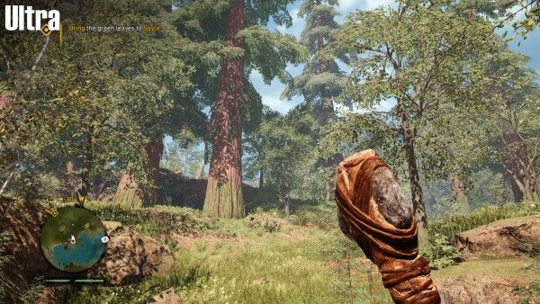
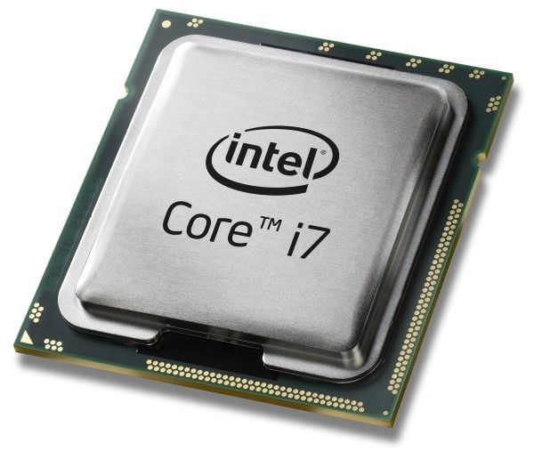
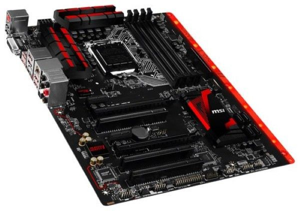
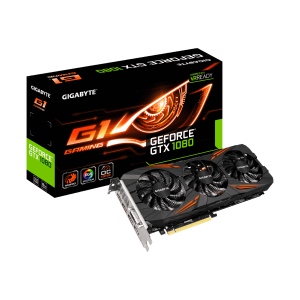
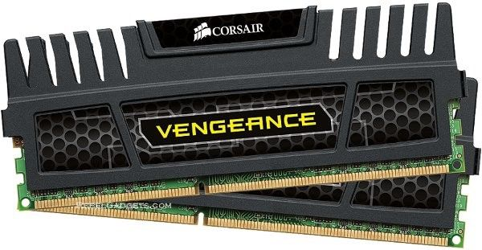
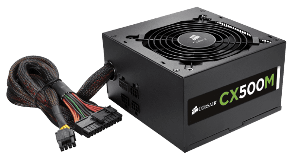
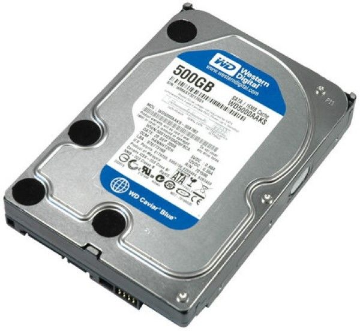
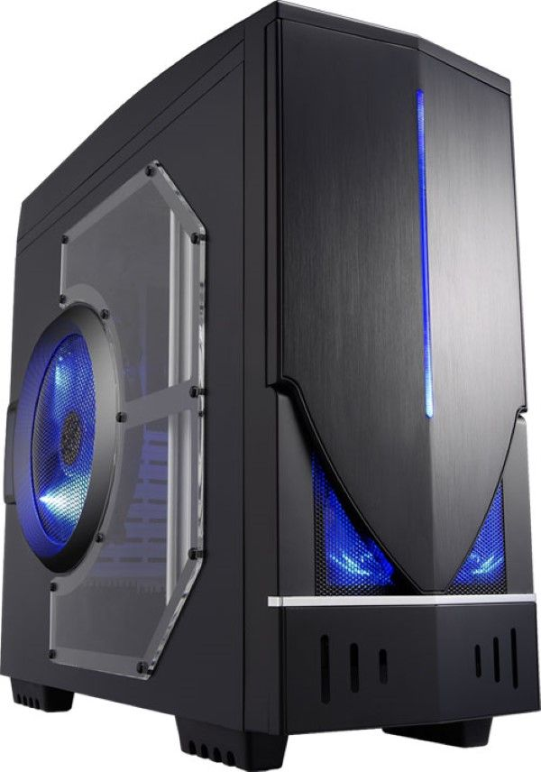

Panduan Merakit PC Untuk Pemula Ini
Ikuti Panduan Rakit PC Gaming untuk Pemula Ini, Supaya Kamu Nggak Bingung Pada artikel kali ini, Jaka akan membahas mengenai cara dasar menentukan komponen PC untuk dirakit sebagai PC gaming. Tentunya artikel ini tidak ditujukan untuk kamu yang sudah ahli, tapi lebih buat kamu yang masih bingung atau baru pertama kali merakit sebuah PC gaming. Nah, tidak perlu berlama-lama lagi, mari langsung saja kita bahas caranya.1. Bujet
Yang pertama harus menjadi perhatian kamu adalah bujet. Bujet perlu kamu perhatikan, jangan sampai kurang atau pula terlalu berlebihan. Seandainya kurang, tentu rencana kamu untuk membuat sebuah PC gaming akan batal. Kalau kelebihan, nantinya akan membebani keuangan diri kamu sendiri.
Namun lain cerita seandainya PC ini juga kamu pergunakan untuk menghasilkan uang, semisal olah grafis dan lain-lain. Namun kalau hanya murni untuk hiburan atau gaming, sangat disarankan secukupnya saja. Jangan sampai kamu berutang hanya demi membuat sebuah PC gaming. Biasanya dalam membuat sebuah PC gaming minimal bujet yang diperlukan adalah kisaran Rp 5 juta. Namun kalau kamu sedikit ahli, dengan bujet berapa pun kamu siap untuk membangun sebuah PC kok. Jaka sendiri mulai membangun sebuah PC gaming dari Rp 1,2 juta rupiah.2. Kualitas Gaming PC yang Diinginkan
Selanjutnya adalah kualitas gaming PC yang kamu harapkan. Tentunya hal ini akan diimbangi dengan jumlah bujet yang kamu miliki. Seandainya bujet kamu terbatas, tentu saja kamu tidak bisa membuat sebuah PC gaming high-end. Atau apabila bujet kamu sangat tinggi, tapi kamu hanya ingin bermain game yang biasa-biasa saja, nantinya hardware-hardware yang kamu pergunakan bisa disesuaikan.
Untuk lebih mudahnya, kamu juga bisa melakukan simulasi melalui situs Game Debate. Cukup masukkan kira-kira game apa yang ingin kamu mainkan, lalu masukkan prakiraan spesifikasi PC gaming yang akan kamu rakit. Maka kualitas dari game tersebut akan terlihat.3. Spesifikasi PC Gaming
Saatnya masuk ke bagian yang paling penting dan sekaligus yang selalu ditanyakan pada forum-forum PC gaming. Spesifikasi PC seperti apa sih yang kita perlukan? Penjelasan Jaka adalah sebagai berikut.
3.1 Prosesor
Pertama-tama, mari kita tentukan prosesor terlebih dahulu. Prosesor merupakan bagian yang paling penting menurut Jaka, bahkan lebih penting dari kartu grafis itu sendiri. Karena meski tanpa kartu grafis, PC kamu masih dapat digunakan. Sementara tanpa prosesor, PC kamu tidak dapat digunakan.
Dalam kebutuhan untuk membuat sebuah PC gaming, minimal spesifikasi yang kamu butuhkan adalah 4 Core. Karena memang mayoritas game-game PC saat ini meminta spesifikasi 4 Core sebagai minimalnya. Sebagai pilihan dalam segi bujet, kamu bisa pakai Intel Pentium Kabylake 2 Core 4 Thread yang baru. Oh ya, ada tambahan sedikit, khusus untuk prosesor Intel. Intel memiliki sebuah teknologi yang disebut dengan Hyper Threading. Prosesor yang sudah mengadaptasi teknologi tersebut meski jumlah core-nya hanya 2, akan memiliki kemampuan setara 4 core. Begitu juga selanjutnya, 4 core berarti setara 8 core dengan Hyper Threading. Atau sebagai alternatif, kamu juga bisa memiliki prosesor seperti pada artikel Jaka berikut. Namun jika tidak terikat dengan bujet, kamu bebas memilih prosesor apa pun selama minimal memiliki spesifikasi 4 Core.3.2 Motherboard
Selanjutnya adalah pilihan motherboard. Dalam memilih sebuah motherboard, yang terpenting adalah kamu memilih motherboard yang sesuai dengan socket prosesor milik kamu. Jangan sampai kamu membeli prosesor dengan socket LGA1151, tapi motherboard kamu memiliki socket LGA1150.
Selanjutnya adalah chipset pada motherboard itu sendiri. Apabila kamu terikat bujet, kamu bisa memilih motherboard dengan chipset awalan "H". Atau kalau kamu memiliki bujet lebih, kamu bisa memilih motherboard dengan chipset awalan "B". Dan khusus untuk kamu yang ingin melakukan overclock, kamu bisa ambil chipset awalan "Z". Contohnya, untuk bujet dasar, kamu bisa memilih motherboard Gigabyte GA-H110M-DS2. Lalu untuk kelas menengah, kamu bisa memilih motherboard Gigabyte GA-B150M-DS3H. Dan terakhir untuk kelas tertinggi, kamu bisa memilih Gigabyte GA-Z170X-Ultra Gaming. Perhatikan huruf yang Jaka tebalkan ya, itu adalah seri chipset motherboard.3.3 Kartu Grafis
Selanjutnya untuk memilih sebuah kartu grafis, kamu bisa membaca artikel Jaka berikut. Pada daftar Jaka di bawah, Jaka sudah memberikan informasi mulai dari yang termurah hingga yang termahal kok. Jadi Kamu tinggal pilih dan sesuaikan saja dengan bujet yang kamu miliki.
3.4 RAM
Selanjutnya adalah memilih RAM. Dalam memilih RAM, hal paling penting menjadi perhatian kamu adalah jenis dari RAM itu sendiri. Pada umumnya saat ini yang beredar adalah RAM jenis DDR3 dan yang terbaru DDR4. Hal ini harus kamu cocokkan dengan jenis motherboard yang kamu miliki. Apakah motherboard kamu memiliki socket DDR3 atau DDR4.
Untuk kapasitas yang Jaka sarankan sendiri minimal adalah 8 GB. Meski game seperti Overwatch bisa berjalan dengan RAM sebesar 2 GB, tapi masalahnya PC kamu juga terbebani dengan sistem Windows. Berbeda dengan konsol yang memang didedikasikan untuk gaming sehingga memiliki manajemen RAM yang baik. Oleh karena itu RAM kapasitas 8 GB adalah sebuah pilihan yang tepat.3.5 Power Supply
Power supply merupakan sebuah bagian paling penting dari yang terpenting menurut Jaka. Jangan pernah sekali-kali mempergunakan power supply murahan yang tidak jelas asal-usulnya. Karena bukan tidak mungkin karena power supply murahan tersebut dapat membuat seluruh komponen PC kamu yang harganya sangat mahal rusak total.
Jaka sangat sarankan, ambilah power supply dengan sertifikasi 80+ bronze. Untuk merek, kamu bisa ambil Seasonic atau Super Flower dan sekelasnya.3.6 Ruang Penyimpanan
Selanjutnya adalah ruang penyimpanan, Jaka sarankan kamu ambil minimal kapasitas 1 TB. Selain karena harga antara 1 TB dan 500 GB yang saat ini tidak berbeda jauh, namun juga karena dari segi game-game PC yang saat ini ukurannya sangat besar. Mempergunakan ruang penyimpanan sebesar 500 GB tentu akan terasa sempit.
Jenis ruang penyimpanan pun kamu bisa ambil hard disk biasa pada umumnya, ataupun SSD. SSD sendiri Jaka sarankan sebagai opsional saja, tidak wajib. Untuk mengetahui detail perbedaannya seperti apa, kamu bisa coba baca artikel Jaka berikut.3.7 Casing PC
Yang terakhir adalah casing PC. Untuk casing PC bebas kok, Jaka sarankan minimal memiliki fitur manajemen kabel. Selanjutnya tinggal kamu sesuaikan saja ukuran casing PC kamu dengan jenis motherboard yang kamu pakai. Misalnya motherboard kamu memiliki ukuran ATX, kamu juga harus memakai casing PC ATX.
Nah, itulah dia barusan artikel Jaka mengenai panduan merakit PC gaming untuk pemula. Semoga artikelnya bermanfaat, selamat mencoba ya!About US

Nama saya adalah Ricky Syahputra dari Indonesia. saya menulis artikel ini untuk berbagi cara-cara supaya tidak ada yang bingung lagi untuk mengotak-atik komputer-komputer anda, dan juga bisa saling sharing.